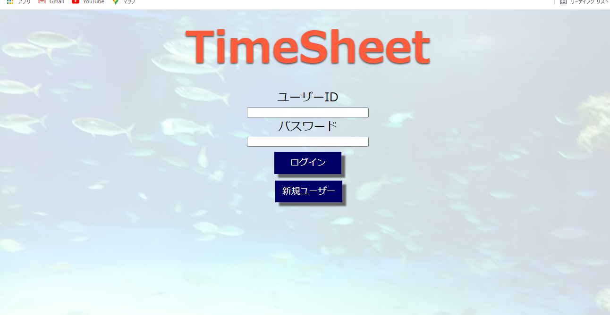
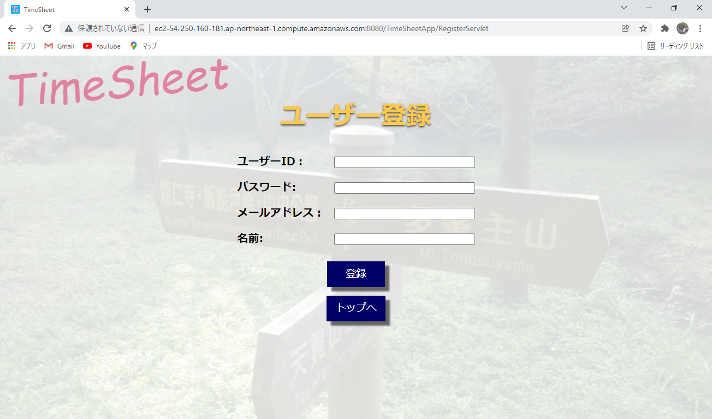
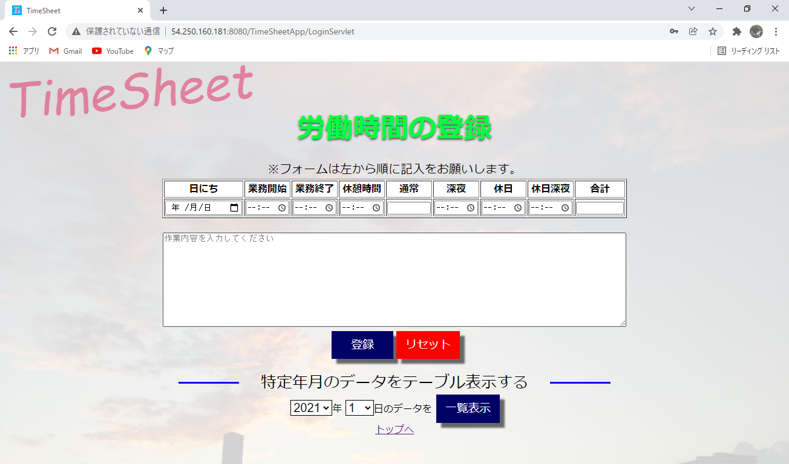
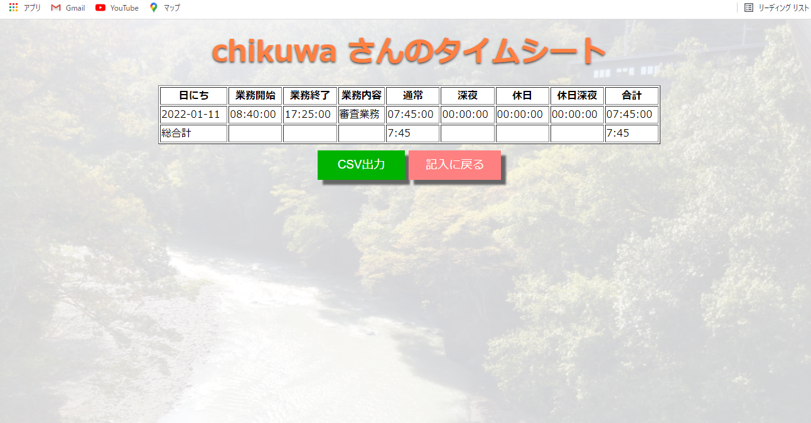
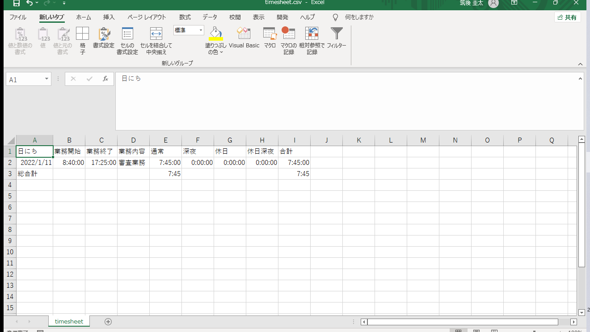

自己紹介

筑後 圭太
18歳で上京し、某IT企業に派遣社員として配属。主にExcelを使用した業務の中で、独学で学んだVBAでツールを作成し活用してきました。そのことからITに興味が湧き、Javaを始めとしたIT技術の独学をほぼ0からスタート。現在はJava Silver取得に向け勉強中です。趣味は将棋で、過去にアマチュア二段を御徒町将棋センターで認定されました。将棋の練習でもプログラミングの勉強でもコツコツと努力するのが好きです。
- 2017年4月 上京
- 2017年5月 株式会社日本ベストサポート 入社
- 2017年6月 某IT企業 登録
- 2020年6月 テレワークを通じてVBAの独学を開始
- 2020年12月 Javaの独学を開始
- 2021年2月 Javaの独学に合わせてSQLの独学を開始
- 2021年8月 Servlet/JSPの独学を開始
制作物
- 
- 
- 
- 
- 
JSP/サーブレットの勉強を一通り終えた所で、JSP/サーブレットで何か作れないかと考えた時に、私が会社で使っているタイムシートをWebアプリ化できないかと思い立ち作成しました。私が使っている個人用のタイムシートはExcelでできているのですが、Excelに変換しやすいように登録された労働時間をCSVファイルとして出力できるようになっています。このWebアプリの作成を通じて、HTML/CSSなどのフロント系の言語や、サーバーやデータベース接続に関してのセキュリティについて学ぶことができました。今後は実務でも学んできたことを活かせるようになりたいです。
使用言語
Java,HTML/CSS,JavaScript,jQuery,AWS(EC2/RDS)
スキルセット
| スキル | 評価 |
|---|---|
| Excel | ☆☆☆☆☆ |
| VBA | ☆☆☆☆☆ |
| Java | ☆☆☆☆☆ |
| SQL | ☆☆☆☆☆ |
| HTML | ☆☆☆☆☆ |
| CSS | ☆☆☆☆☆ |
| JavaScript | ☆☆☆☆☆ |
| jQuery | ☆☆☆☆☆ |
- ☆☆☆☆☆・・・少し使用した程度
- ☆☆☆☆☆・・・実務で使用していなく勉強したが未熟な部分あり
- ☆☆☆☆☆・・・実務で使用していないが勉強中
- ☆☆☆☆☆・・・実務で使用しているが未熟な部分もあり
- ☆☆☆☆☆・・・実務で使用していて自信あり
業務で得たスキルの他、独学でも多くの技術を得てきました。しかしまだまだ甘いのが現状なので、これからも勉強や業務を通して理解を深めていけたらと思います。また今後はさらに資格取得も視野にいれつつ、サーバーやデータベースといったバックエンド側の専門的な知識も増やしていきたいと思います